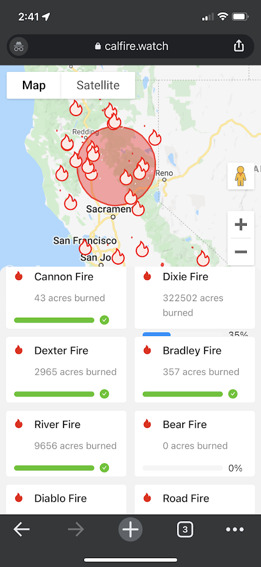

Alex Carter Dev History
Projects: Gas Refinery, Synthesis (and more)
Gas Refinery - (Gas Media Group)
Overview
Gas Refinery is selection of microservices, infrastructure, tooling and applications that collect, "refine", and present company data and allow staff to automate large sections of their day to day operations
To date it has cataloged over 1 million video assets, all automaticatlly collected from external sources on a distrubted compute system
Achievements
- Designed, Developed, Deployed and Matained a micro-service full-stack application from scratch.
- Created and maitained a hybrid cloud archectecture.
- Developed a distrubted video rendering solution accessible from a simple web interface.
- Developed a distrubted scraping system to collect client-content from a varity of sources.
- Succesully developed a asset pipeline to store, process, and analzye 1m+ video clips.
- Created, managed, and hired for this new team.
Tech-Stack
- NodeJS/Typescript accross all systems to allow for code-reuse
- Docker/Kubernetes for micro-service hosting.
- Redis-Backed Job Queue Distrubution System
- Google Cloud Platform for Cloud, Proxmox Ubuntu VMs for On-Prem
Synthesis - (Autodesk Internship)
Overview

A real-time physics simulator for testing FRC/FTC CAD designs in an interactive enviornment
Achievements
- Became lead for the exporter team, managing tasks and overseeing sprints
- Developed systems to allow for the processing then importing of 3D CAD models into a realtime simulation
- Performed convex-hull decompisition of exported meshes to allow for real-time perfomance
- Worked with teams to expirement with hardware-in-the loop simulation
- Created debugging tooling in engine to properly analyze collision meshes
Tech-Stack
- C# for Autodesk Invector Plugins
- C++ for Autodesk Fusion 360 Plugins
- C# + Unity for the rendering enviorment
- C++ for Convex Hull Decomposition Service
Lightning Round - (Personal Projects)
Rave Buddy
Off-the-grid embedded GPS tracker to allow for communication in enviorments in-which cell service may not be possible (Festivals)- ESP32 embedded system running FreeRTOS coded in C++
- iPhone/Android apps written in Flutter
- LoRa based communication to allow for 3+ miles range, with out needing GSM/LTE
- Supports basic messaging and LED controls as well
VictoryCar
AV Deep-Learning Experimentation (U-Net-based CNN's in Tensorflow)FireWatch
Full-Stack Application to Track Wildfires in CA